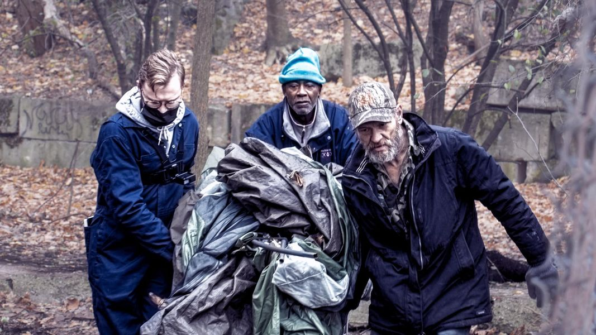

Mobile uploads
I am spending a couple days celebrating the lives of Akronites who have given their lives for the good of others as Aaron Bushnell did.
Today I want to celebrate Fran Wilson.
They are pictured here on the left. They are helping this senior Black man move his belongings in a raid on his camp by the city of Akron. Of course, no one was there to help this man from Community Support Services that day (they had come several days earlier and told the homeless people at this camp to call their office. The peope living at the camp thought that was absurd because no one there owned a phone.)
No one from the Continuum of Care was there. No one from the city of Akron was there, other than the police and the nuisance inspector.
But Fran Wilson was there.
On their website, they write:
Fran is a 4th gen Akronite, a young and queer progressive organizer in Akron, Ohio.
In 2023, Fran ran for Akron City Council At-Large, the only one under 40.
I’m still trying to shake the bitterness I feel about that election.
We all had been so educated in diversity, equity, and inclusion. We all had been through so much. Black Lives Matter, LGBTQIA support, learning how to respect people with the pronouns they prefer. And we voted for Jeff Fusco over Fran Wilson.
Fran worked SO hard for that election. The only time I saw Jeff on the campaign trail he was wearing jeans, made some off-handed speech and then left as soon as he was done speaking.
It’s these kinds of things that quickly send me into a deep existential descent into dispair. This is not mental illness. This is reading the room for what it is. Hopelessness is not irrational.
In what world would Akron have not benefited from having a queer, young person on city council?
While I have deep reservations that the whole of humanity has ever, or will ever change from the collective angry monkeys that we are, I have clear and factual proof that profound goodness lives in the hearts of all humans.
Fran is clear and factual proof that human goodness does indeed exist. And it is so bright it’s like seeing the light of God walk on earth.
This picture could be a sacred story of Jesus helping people that the world hates. Or it could be that the Black man is Jesus and we are practicing what Jesus taught in Matthew 25:40:
“Truly I tell you, whatever you did for one of the least of these brothers and sisters of mine, you did for me.”
Where were you when “the least of these” needed you most? I know where Fran Wilson was. He was in the woods gathering up this man’s belongings, putting them on my truck and moving the man and all his belongings to an abandoned garage with gaping holes in the roof and walls.
Thank you Fran. Thank you for fighting so hard. I can’t promise you that the system will ever change. (To help get me out of bed in the morning, I have developed a theory that this is all a construct, a dojo, where things stay the same and we are meant to practice selflessness and self-growth. The point isn’t to change the system. That’s not our responsibility. The point it to change ourselves.)
The world needs you, Fran. Thank you for being you.